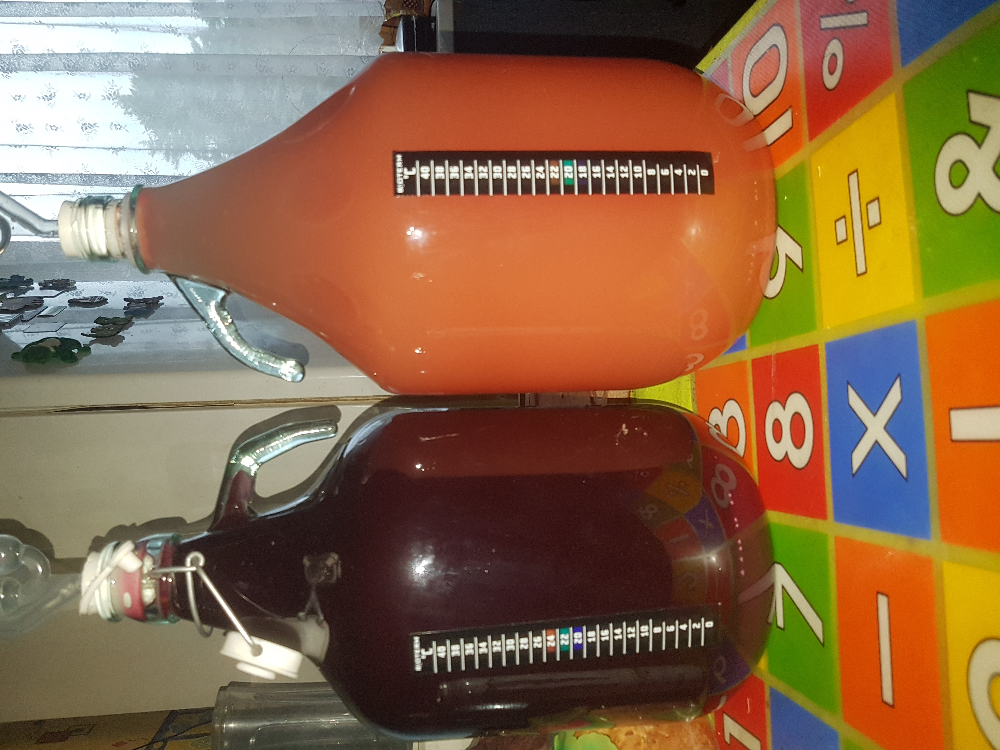

Veinitegemine on põnev ja loov hobi, mis pakub võimalust valmistada omale sobivaid maitseelamusi. Kodus valmistatud veinidel on unikaalne maitse ja see protsess võimaldab avastada uusi maitseid.
Rohkem infot veinitegemise kohta leiad siit.
| Koostisosa | Kogus | Märkused |
|---|---|---|
| Marjad | 5 kg | Värsked ja küpsed |
| Suhkur | 1 kg | Mahe või rafineeritud |
| Vesi | 4 L | Puhas ja filtreeritud |